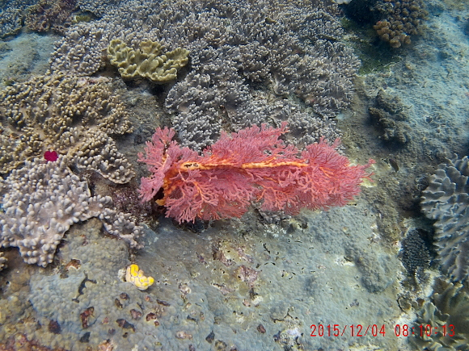
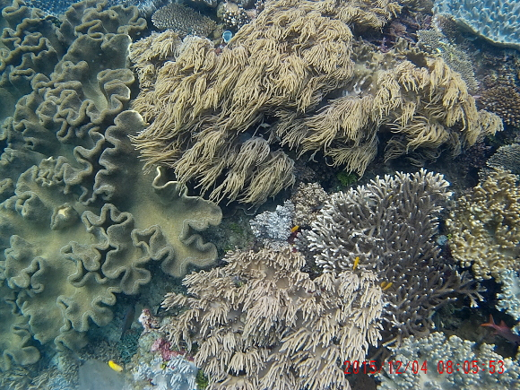
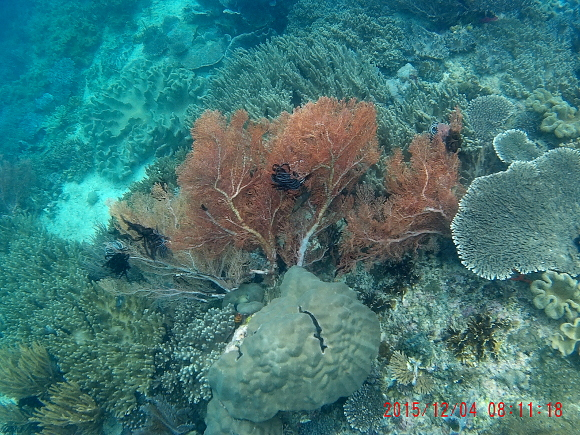

Malaysia Trav-E-Log ©
Snorkeling, Kapalai, Borneo
| |
| back: Snorkel Sibuan | Pristine coral, Kapalai |
17 Mar 2016, Semporna, Sabah, Borneo, Malaysia Note: All photos taken with SJ Cam in underwater housing using natural lighting, while snorkeling.
Babu Bill
Question? Contact me at the Juno.com address Dancer2SEAsia.
Have a nice day!
Special Topics:
-------------------------------------------
-------------------------------------------
Two members of a small school of mega-fish -- bumphead parrotfish, about 3 feet long! South side of Mansoear Island. 
Saw this mega school of fish while snorkeling around the docs at Airborei Island after lunch. A total wall of fish, so thick one could not see the coral. I swam right into the middle of the school, making them a little uncomfortable. They cleared out a small area around me, but soon totally surrounded me. 
I describe this as pink sponge coral. I'd be happy to properly label if someone would like to identify it. The yellow item is a heart ascidian. Friwinbonda 
Beautiful display of soft corals. Friwinbonda 
Blue starfish and heart ascidian (yellow) amongst other jewels. Friwinbonda 
Wonderfully diverse reef with no damage, a real treat. Friwinbonda 